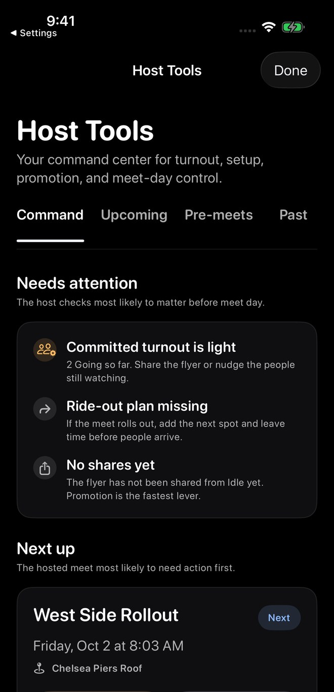
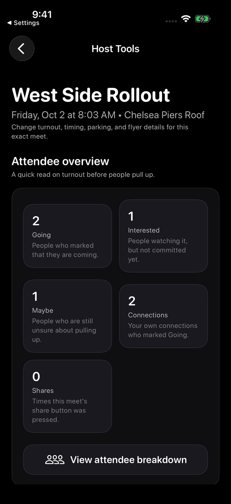
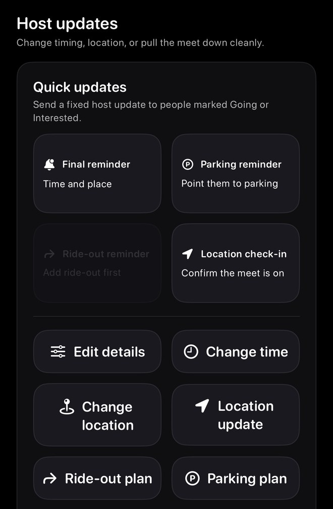
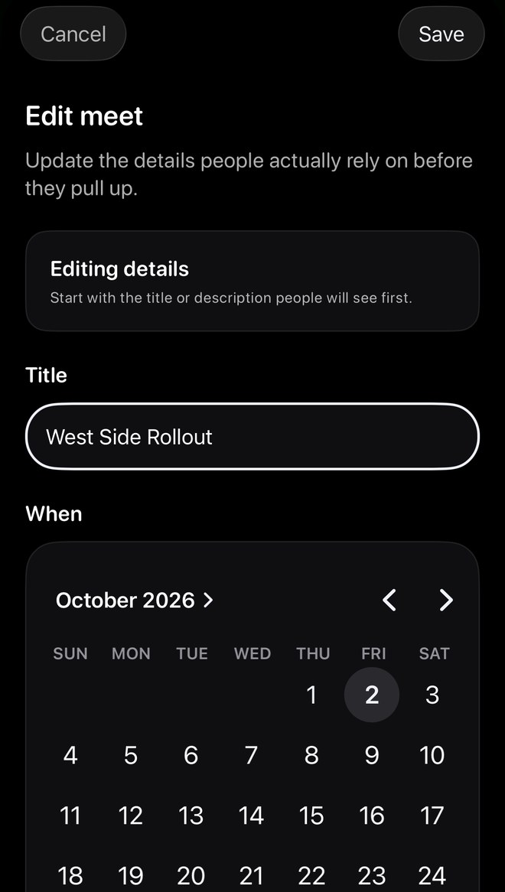
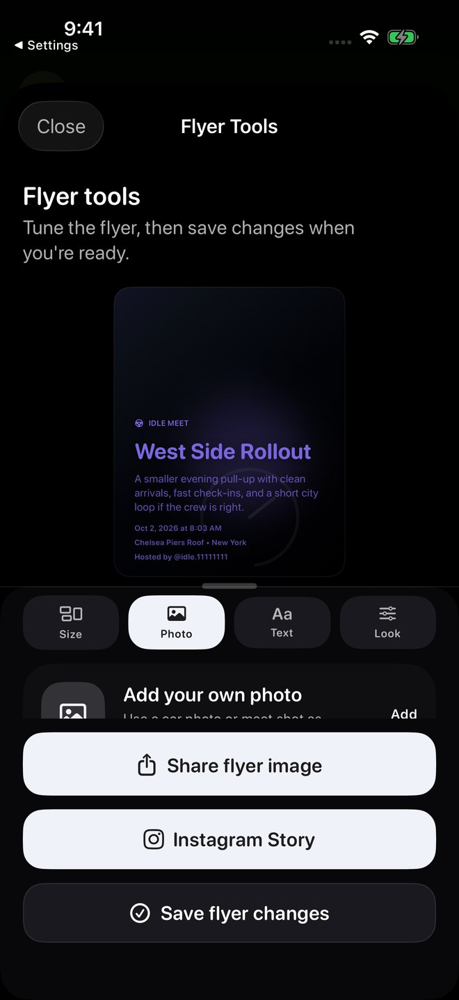
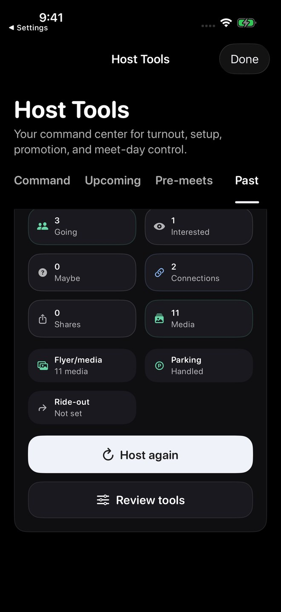
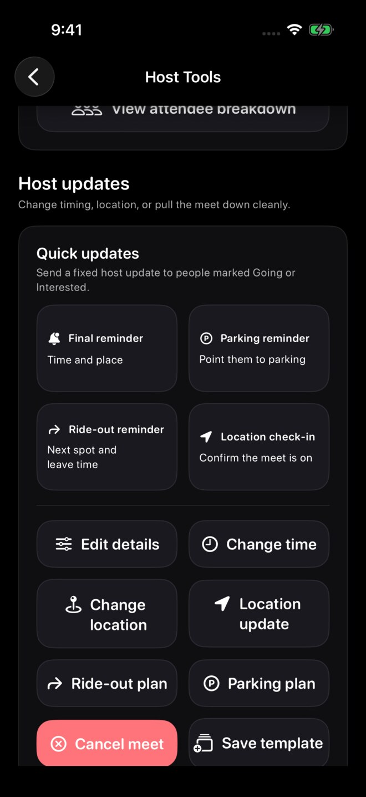

Screenshots show sample content from the Idle test drive in a prerelease build, version 1.3.0 (1), using Dark appearance and Alpine White. Your app may look different. Learn about the test drive.
Open Host Tools
From Home, tap your avatar to open the sidebar, then choose Host Tools. The Hosted count on a profile leads to hosted meets; it is a different entry.
In Command, review Needs attention and Next up. Select Manage meet for the meet you want to work on.

Review attendee context
The selected meet’s Attendee overview shows Going, Interested, Maybe, Connections, and Shares context.
Use the counts as context for that meet. In the captured test drive, View attendee breakdown opened the regular Meet page; a dedicated attendee list was not verified.

Find quick updates and meet-day controls
Quick updates contains fixed messages for Final reminder, Parking reminder, Ride-out reminder, and Location check-in.
The sample’s ride-out reminder is disabled with Add ride-out first. Below the reminders are Edit details, Change time, Change location, Location update, Ride-out plan, and Parking plan.
Check the selected meet and the action’s wording before sending an update or changing its details.

Review edits before saving
Edit details opens an Edit meet form. Review the title and schedule, then use the form’s explicit Save control when the changes are ready. Use Cancel to leave without applying them.
For timing, location, parking, or ride-out changes, start with the matching control for the selected meet.

Keep flyer sharing and saving separate
In Flyer Tools, review the flyer and use Save flyer changes when the hosted meet should use your edits.
Share flyer image and Instagram Story are separate actions. See Edit and share meet flyers for the format and styling walkthrough.

Look back at past meets
The Past tab provides recap context and setup checks. It includes Host again and Review tools entries.
For reusable setups, see Meet templates. Always review the future date and every reused detail before publishing another meet.

Check the ride-out reminder after saving a plan
Use Ride-out plan to enter and save the next stop, leave time, and note. After this fictional local plan was saved, Ride-out reminder changed from Add ride-out first to Next spot and leave time and became enabled.
The reminder was not sent. For the saved attendee-facing example, see Ride-out plans. The flyer guide also shows a locally saved and reopened flyer; real hosted saves and notifications remain unverified.


What to expect
Host Tools actions are for the signed-in account that manages the Idle post. Public host credit does not automatically transfer editing, cancellation, or Host Tools permissions. See Host credit.
These local Demo screenshots show the available controls. They do not verify real-account permissions, hosted saves, cancellation, notification delivery, or external sharing.
Flyer changes are deliberate
Previewing or sharing a flyer does not silently update the hosted meet. Tap Save flyer changes when you want those edits to persist.
Troubleshooting
- Host Tools missingConfirm you are signed into the account that posted or manages the meet.
- End time will not saveConfirm the end time is after the start time, or remove the end time if the meet should only show a start time.
- Update reached fewer peopleSome attendees may not be marked Going or Interested, or may not allow host updates.
- Host again shows old detailsChoose a fresh future date before posting the new meet.
Contact support
Email support@idlemeets.com with the meet title, host account, what you tapped, and the exact message shown.